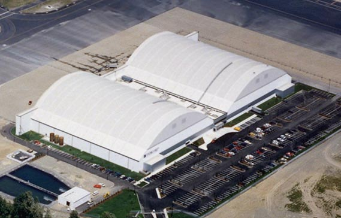

So where is this list of alpha testers ? I can’t find it in this thread.
Yes it looks much better, but if the doors were useable then they siill would go through the wall… thicker to accomodate doors at the front… Tunnel is fine
The door opposite down the road has better shape for it’s exterior try replicating the door opposite onto this keeping that as the uniform design for the front of the door
looks good to me but, teh arch still looks out of place especially with the fencing around it… maybe replace teh fencing with concrete walls that have barbed wire on top… but that would mess with visual… unless it had a bullet proof window built into it.
How exactly do you get the Black Mesa assets and maps to be compatible with Hammer?
I will put up the list in a couple of days when I have finalized it.
I will probably have to do this although I don’t want to block off the visuals.
I don’t mean to be rude, but you can find that out in 5 seconds doing a google search. It took me the best part of 1 minute to get it working.
you could always do something like this for the walls
████████████
█====██====█
████████████
the white being the wall and the = being windows or fencing.
I imagine it’s a bit late to “subscribe” to the alpha… Doesn’t matter, I will be here for the beta ! I will continue to give you some suggestion relative to the media.
For all those of you out there paying attention, I’ve been working mainly on C2A5G today. By the end of today it’ll be “mostly complete,” as I like to call it. What does this mean? It’s “ready enough”. Though it hasn’t undergone any optimization, lightmap optimization, soundscaping, or any of the minor details yet, it’s ready as far as the level geometry and detail goes. I would be happy enough to release it in its current state for an alpha test.
What does this mean in the grand scheme of things? Insurance. I’m going to keep working on it, of course, but no matter what happens, it’s ready already for the alpha on Tuesday. 1 down, 3 to go. I plan to get them all into that state before refining them even further.
To be honest, I think your first iteration was better. By having a single arch it makes the area less aesthetically pleasing, especially when there’s two roads coming off of it (they feel too wide). The only problem with the first version was that the arches to the two hangars were glued together, which doesn’t seem realistic. All you have to do is separate the hangers slightly and problem solved (see image). Have the two roads come out of the hanger…they can stay separate or merge into one later. This will look much better.

It didn’t really make sense, as Ronster was saying. On that design the doors had nowhere to open. Were they designed like that, they’d have to be folding or hinge doors, but those blast doors can only slide so it didn’t make sense.
This is my third (and final, I reckon) iteration. Though it is perhaps less aesthetically pleasing, it makes the most sense, and is consistent with the way the doors are on the rest of the map.

in the new version that fencing that is connected to the door doesn’t make sense, recommend removing it, that sort of opens up the area also the things near that red door look like they would make ok cover.
Like you say doors are less aesthetically pleasing…
The only things I can think of from this to improve is:
curve the roads into 1 rather than vertex
raise some areas of the doors like 3 bumps running horizontal and use vertex diagonals rather than just plain flat or rectangular to slope the raised parts off… This can be a similar or the same texture or different (horizontal trapeze shape)
sink the doors into the structure a little further giving a ceiling and a bit more depth but not by much add flood light prop in the centre to the ceiling in the middle of the doors
A couple of petrol pumps would make sense for cover not only in the sense that people would go to get their vehicles repaired here but also refuel extending the tarmac (plain texture no painted lines) to this area outside the window with a raised pavement island and a couple of petrol pumps
finishing the pavement at the straight on the right and bringing the central reservation back from the door to this point. Use plain tarmac texture as soon as the curve or vertex starts losing the painted lines here also
a few rubber tyres lying around
Late to the party… (And didn’t have time to read all the discussion about doors until now, so sorry if it was already suggested/discarded):
How about something like that for that door/exit:
The wall could be squared as it is now, but with more “bunker-like” aesthetics, as the building entrance in the end of the dam:
Ugh, that last design is awful and actually make the least sense! But before I get to that, even if you assume the doors are sliding (which they are, judging from C2A5I), it should not stop you from using the previous hangar design. If you look at all of the doors during the garg chase, they have the same sliding problem in that it doesn’t seem like there’s any place for them to slide to. The dev’s only truncated the width of the blast doors to create the illusion that they slid open, even though it doesn’t seem like they actually could. Thus, your initial setup was actually consistent with their design.
Getting back to the nonsensical part, the reason why your final iteration looks so bad is because you basically turned the hangar into an office building with the hinge doors opening directly onto a street (rather than parallel to the street with a sidewalk separating them). No such building layout exists in real life. The only reason why a road would ever come out of a building is if the building were housing some sort of vehicle (e.g. a humvee), hence the appropriateness of the hanger design with sliding, rather than hinge doors.
Ronster mentioned something about security issues with two hangars but I think it’s rubbish. BRMF is a secure installation…no one knows about it and there’s really no additional effort needed for a security guard to watch over two hangars instead of one.
I seriously hope you reconsider the layout of that building.
That’s a good point, I’ve removed it. Opens up the area a little, though I doubt anyone will go there. I’ll throw in some hidden goodies for any intrepid explorers, though.
If you want to curve those roads you can be my guest, but that looks like absolute hell on earth to get all the curves right to me. Petrol pumps seem like a decent idea but might make the area a bit overcramped. I’ll see what I can do.
I could give this a try, it could definitely work.
It’s not awful, there are a few buildings laid out like this throughout Surface Tension. And it’s not necessarily an office building, it could be anything. Seeing as it’s next to a garage, the assumption that it’s an office seems a tad counter-intuitive to me. It could still be a tunnel running through the building like the end of the level - I didn’t see you object to that one, where I used the doors in the exact same way.
And all the sliding doors on C2A5I placed by the BM devs do have somewhere to slide to - they slide into the wall. Because they’re inside you don’t know where the wall ends. But when they’re used outside like I am you can clearly see they have nowhere to slide to. I will play around with it and try to use Conti’s design, but I don’t agree with you that it’s awful. But it does look ugly.
randomish idea: you mentioned earlier about having a vort take out a sniper,just a though instead of just one vort have 2 or 3 fire there attack into the nest, the last one getting lucking ant hitting the sniper… only problem would be that the sniper could kill the vorts.
While the hangar design is ideal, this could also make sense. The door in this image is foldable and slides upward, which could bypass some of the issues with sliding laterally. If you implement this, you’ll have to modify it a bit as it’s essentialy the same element you used for the door opposite the TOW launcher.
Really not digging this idea. The whole point of the rooftop sniper on C2A5H was to introduce a gameplay element to make it more challenging to get to the satchel tunnel. By having the vort take out the sniper, you will have eliminated this element and instead substituted it for another script…of which you already have plenty.
The first Image is exactly what I was trying to say about the door opposite you have this door opposite and this should be the uniform door
A couple of petrol pumps would make sense for cover not only in the sense that people would go to get their vehicles repaired here but also refuel extending the tarmac (plain texture no painted lines) to this area outside the window with a raised pavement island and a couple of petrol pumps
finishing the pavement at the straight on the right and bringing the central reservation back from the door to this point. Use plain tarmac texture as soon as the curve or vertex starts losing the painted lines here also
a few rubber tyres lying around
Implementing it now. It’s the best compromise, probably.
As for the Sniper/Vort, my idea was to have a separate sniper as you approach the first jump pad. Probably not going to do it, was just throwing ideas at the cork board.
Once the alpha test is started, most ideas gameplay wise will come